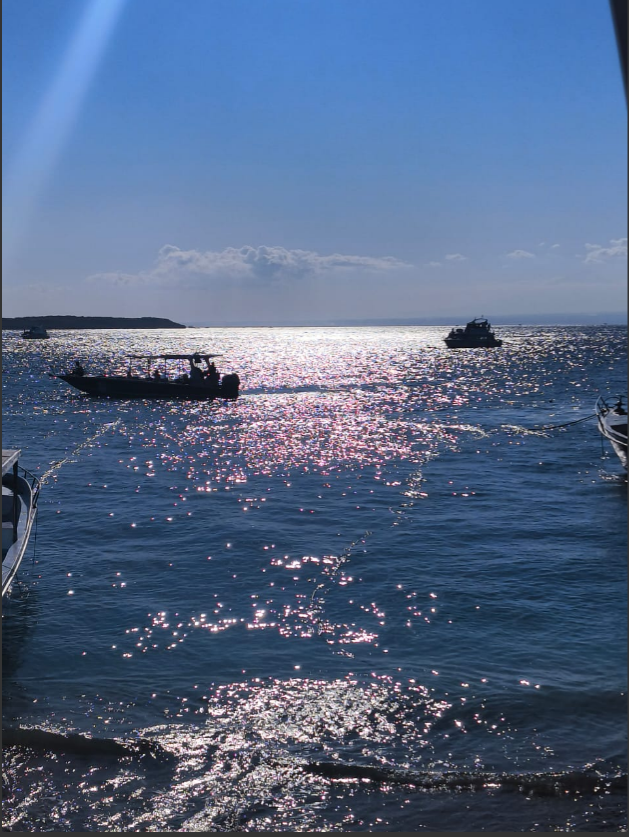

GENERAL RESUME: GAURI SHARMA
PROFILE PHOTO:

SUMMARY:
This resume is all about myself which will help you guys better understand about me as an individual.
This resume is going to consist my education, work exp, skills, and achievements.
Also, if you guys want to reach out to me, I am going to list my contact information, through which you can do so.
Please connect with me if you want to!
EDUCATION:
- SCHOOL
RYAN INTERNATIONAL SCHOOL[2009-2022]
- COLLEGE
DRONACHARYA COLLEGE OF ENGINEERING [BTECH CSE-IOT & CYBERSECURITY 2023-27]
WORK EXPERIENCE:
I have no general work experience as i am currently
a student, but i wish to gain experience by enrolling myself
in any internship of some kind.
SKILLS:
- SOFT SKILLS:
- COMMUNICATION
- LEADERSHIP
- PROJECT MANAGEMENT
- SPOKEN ENGLISH
- STAGE PRESENTATION
- TECHNICAL SKILLS:
- C
- C++
- PYTHON
- IOT
- BASIC WEB DEV-HTML
ACHIEVEMENTS:
- RESEARCH PAPER PRESENTATION:
- RECENT ADVANCES IN SCIENCE AND TECHNOLOGY
TOWARDS SUSTAINABILITY (RASTS-2024)
- INTERNATIONAL CONFERENCE ON SCIENCE, ENGINEERING AND TECHNOLOGY-
RESEARCHFORA
- CERTICATE: INTRODUCTION TO IOT-SIMPLILEARN
- CERTIFICATE: COMPLETION OF C TRAINING-IIT BOMBAY
- CERTICATE: WEBINAR ON INTRODUCTION TO ETHICAL HACKING-HACKTIVISTS UNIVERSITY
NOTE:
LINK TO ALL THESE ACHIEVEMENTS WILL BE SHARED IN CONTACT INFO
CONTACT PAGE
Click me